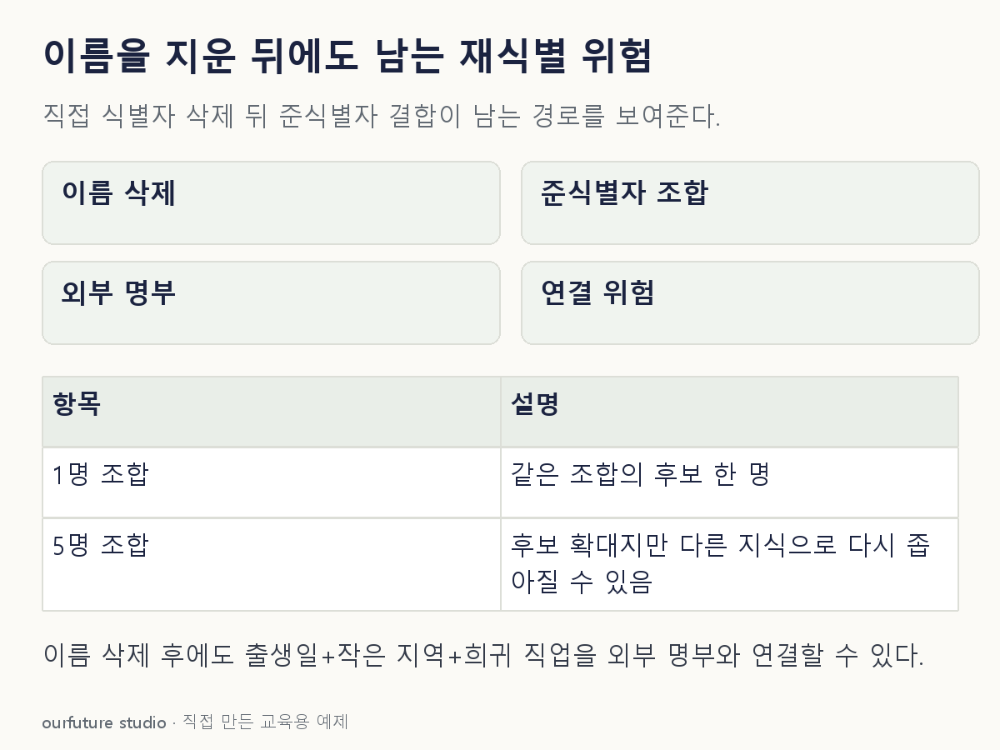

조건을 바꾸며 확인하기
실제 개인 자료나 재식별 공격을 실행하지 않는다. 후보 수의 역수를 재식별 확률로 계산하지 않는다.
설명 그림과 비교하기
아래 그림과 표는 고정된 설명 예제입니다. 기본·변형 중 어떤 조건인지 캡션을 읽고, 바꾼 입력의 결과는 계산 칸에서 확인하세요.

같은 문제를 직접 골라 보기
이름은 삭제했지만 출생일·작은 지역·희귀 직업 조합이 남았다. 외부 명부와 연결할 수 있다.
조건을 더 바꾸면?
지역을 더 넓게 묶어 같은 조합에 여러 사람이 포함되게 하면 완전히 안전한가?
변형 풀이 확인
위험을 줄일 수 있지만 완전한 안전을 보장하지 않는다.
남은 속성, 외부 지식, 제공 환경을 포함한 검토가 필요하다.
이름을 지웠는지 다음에, 무엇과 연결할 수 있는지.